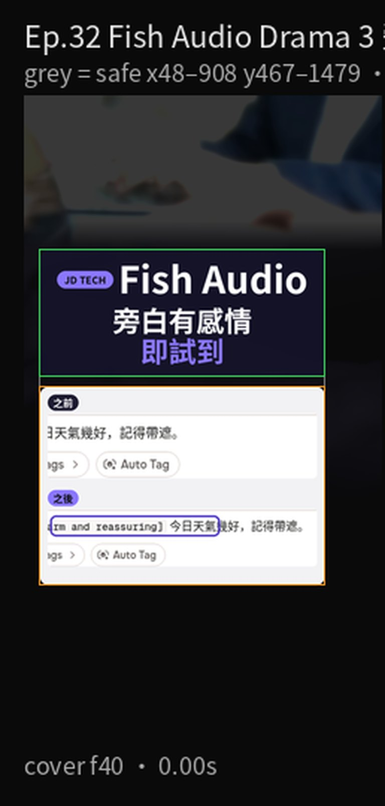
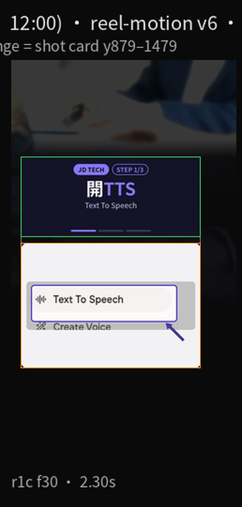
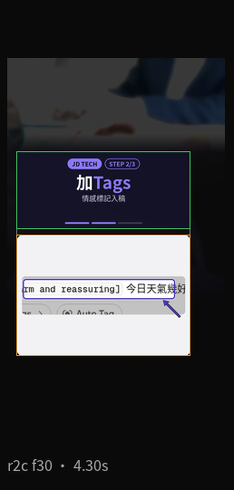
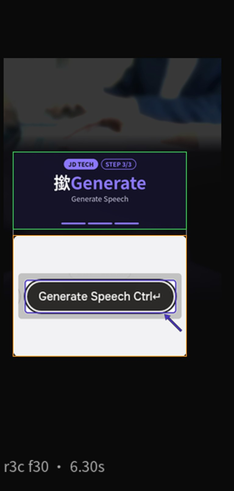

WhatsApp 語音留言講到好平，故事旁白都冇感情。第32集用 fish.audio 嘅 Text to Speech，模型揀 Fish Audio Drama 3：開 Text to Speech，喺稿前面加方括號情感標記，再撳 Generate Speech。示範句係虛構天氣：「今日天氣幾好，記得帶遮。」無商戶品牌。
Reel 一句講晒：Fish Audio｜旁白有感情／即試到
畫面係加咗標記嘅稿，唔係播完嘅聲：封面「之後」同第 2 步都係稿入面嘅 [warm and reassuring]，唔係生成後嘅音頻。2026-10-15 呢次拍片，客人撳 Generate Speech 之後出登入牆，嗰張冇放入本頁，亦冇當「之後」。免費額度同要唔要帳戶以你當日畫面為準。示範句全屬虛構。AI 聲線唔好冒充真人，未經同意唔好克隆別人把聲。Drama 3 喺 2026-10-13 上線，呢則槽位 2026-10-15 12:00，大約兩日內。
你會學到
- 點樣開 fish.audio 的 Text to Speech，揀 Fish Audio Drama 3
- 點樣喺句子前面加 Tags／情感標記，例如 [warm and reassuring]
- 點樣撳 Generate Speech；同埋點解本頁唔放播放結果同登入牆
開始前準備
- 瀏覽器開 fish.audio Text to Speech。呢次截到開頁同加標記都係客人畫面，冇裝 App
- 先寫低一句你想講嘅話。示範只用虛構天氣句，唔好連真人姓名、電話、單據一齊打入去
- 預留可能要登入。撳 Generate Speech 先至出聲；未聽到聲之前，唔好當旁白已經有感情

可抄提示
下面係打入 Text to Speech 嘅示範句。方括號係語氣，後面先至係要讀出嚟嘅字。句子全屬虛構，無商戶名。你自己用就換上真想講嘅一句，出聲前再聽一次。
[warm and reassuring] 今日天氣幾好，記得帶遮。
未加標記嘅對照句係「今日天氣幾好，記得帶遮。」同一句，分別只係前面有冇方括號。
3 步做法
-
開 Text to Speech：開上面條連結，入 Text to Speech。模型揀 Fish Audio Drama 3。未加標記之前，先打對照句，確認畫面仍然係平淡稿。
呢次截圖嘅聲線顯示 Hannah，係當日 playground 見到嘅庫存聲，唔係要你克隆某個真人。掣名係英文 Text to Speech。
未見到模型名 Drama 3 就唔好當用緊呢集教嘅版本。官方寫如果 API 嘅 model 漏寫或者寫錯，會退回 s2.1-pro；網頁就揀你畫面列出嘅 Fish Audio Drama 3。

真實畫面（2026-10-15 自行截圖）：開 Text to Speech。示範句未加標記。模型係 Drama 3，聲線顯示 Hannah。 -
加 Tags：喺句子前面加情感標記，例如 [warm and reassuring]，後面先寫「今日天氣幾好，記得帶遮。」畫面嘅 chip 就係呢個方括號。
官方說明寫：方向用方括號，放喺適用嗰啲字前面，可以用英文或者你自己嘅語言，唔使同稿同一種語言。想只改幾個字，先揀中啲字，再喺 Tags 選單揀範圍標記。本集示範係成句前面一個方括號。
產品頁亦寫到可以用 Auto Tag 先幫稿加方向，再自己改。呢集唔靠 Auto Tag，係自己打 [warm and reassuring]。加完仍然係稿，未撳生成就未有聲。

真實畫面（2026-10-15 自行截圖）：情感標記入稿。[warm and reassuring] 喺句子前面。未撳 Generate Speech。 -
撳 Generate Speech：標記加好，撳 Generate Speech，先至會嘗試出聲。同一句可以改個方括號再試。播放掣名以你當日畫面為準。
本頁呢張圖只係個掣，同埋稿入面嘅標記。唔係播放結果，亦冇波形、冇音頻播放器。
2026-10-15 呢次拍片，客人撳 Generate Speech 之後出登入牆。嗰張登入牆冇放入本頁，亦冇用來做封面「之後」。你自己試，如果要登入，跟 fish.audio 當日畫面；未登入就未聽到聲，唔好當步驟已經完成。

真實畫面（2026-10-15 自行截圖）：Generate Speech 掣。呢張未有播放結果。登入牆冇用。
常見錯誤／注意事項
- 當「之後」係已經播咗嘅聲：封面右邊同第 2 步都係加咗標記嘅稿。聽到聲，先算 Generate Speech 做完。
- 當客人一定撳到生成：呢次拍片，撳 Generate Speech 之後出登入牆。本頁冇放嗰張。免費額度同要唔要帳戶以你畫面為準。
- 用 AI 聲冒充真人：示範用庫存聲，稿係虛構天氣句。未經同意唔好克隆別人把聲，亦唔好扮成某個真人留 WhatsApp 語音。
- 標記寫喺句尾：官方寫方向放喺適用嗰啲字前面。本集係 [warm and reassuring] 然後先至係句子。
- 當廣東話一定完美：官方寫 Drama 3 講 83 種語言，方向可以用中文或英文。聽感以你自己播放為準。本頁冇放播放結果。
示範句「今日天氣幾好，記得帶遮。」全屬虛構，無商戶品牌。封面「之後」係加咗標記嘅稿。客人撳 Generate Speech 可能要登入；登入牆冇放入本頁。
香港用戶留意
用瀏覽器開 Text to Speech 就得，示範冇裝 App。掣名係英文：Text to Speech、Tags、Generate Speech。示範句用廣東話書面。WhatsApp 語音留言可以自己聽完再傳；呢頁只教點樣喺稿加情感標記。登入、語言同剩餘用量以你當日見到嘅頁為準。
官方說明
- Drama 3（Fish Audio 說明）
2026-10-15 打開：方向用方括號，放喺適用嗰啲字前面，可以用英文或者你自己嘅語言。只改幾個字就用 Tags 選單嘅範圍標記。網頁同 API 同一套寫法；API 要將 model 設成 drama-3，漏寫會退回 s2.1-pro - Fish Audio Drama 3 博客（2026-10-13）
2026-10-13 當日上線：Text to Speech、Fish Audio app 同 API 都可以用。博客寫方括號方向，同埋喺 Text to Speech 揀 Tags。官方寫講 83 種語言 - Drama 3 產品頁
2026-10-15 打開：產品頁寫可以用自己嘅字描述語氣，方括號加聲音、情緒或停頓；Auto Tag 可以先幫稿加方向。本集示範係自己打 [warm and reassuring]，冇用 Auto Tag - Text to Speech（fish.audio）
2026-10-15 截圖用嘅頁。模型揀 Fish Audio Drama 3。逐步畫面係當日自行截圖；介面可能更新，以你見到嘅掣名為準
（說明頁當日打開。逐步畫面係 2026-10-15 自行截圖。介面可能更新，以官方為準）
原帖
睇原 Reel ↗（2026-10-15 發佈）